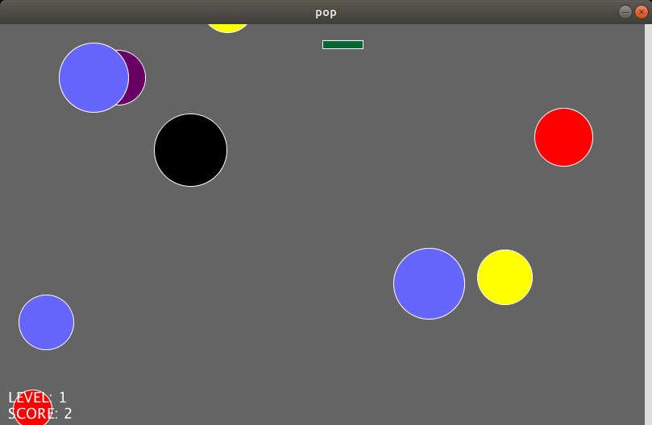
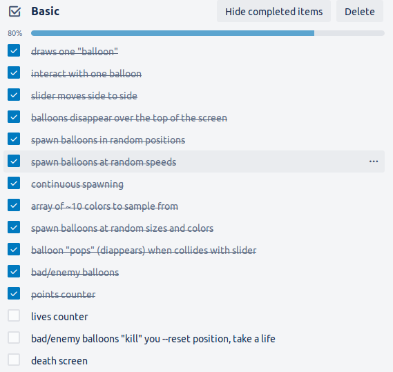
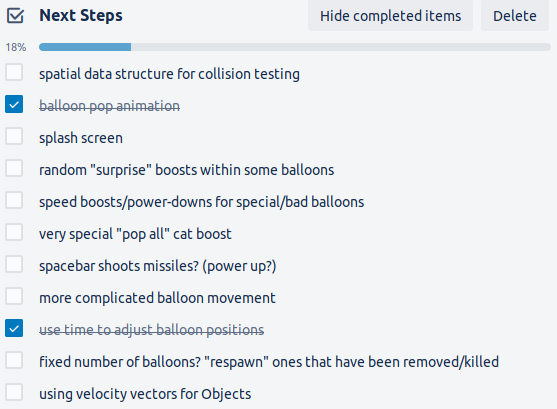
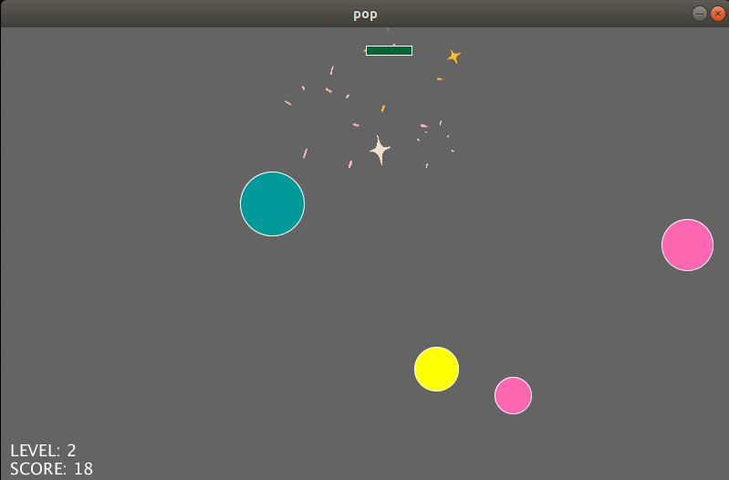
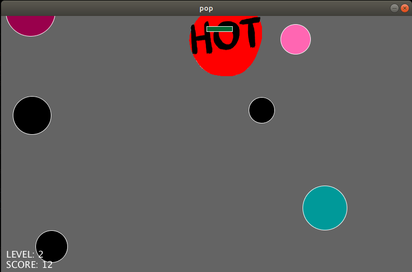

CSCI 8980 Game Engine Technologies
(insert a short description of the class....)
Balloon Pop Game
HW1 - Game from Scratch
Figure 1: A typical Level 1 screen.
In this simple game, built in Processing, the player moves the green slider left and right to pop as many colorful balloons as possible and gain the most points. One point is gained for every good colorful balloon, while one point is lost for every evil black balloon that is popped. This score is presented along with the current level in the bottom left corner, as shown in Figure 1.
As you gain points, you with move onto more difficult levels. Currently, the levels increase one notch for every 10 points earned. Successive levels increase three of the game parameters: maximum balloon spawning speed, slider speed, and the chance a newly spawned balloon will be an evil balloon. Therefore for every new level you face, not only are the balloons harder to pop, the slider is able to travel more quickly. This is the only power-up currently implemented. These values are adjusted as shown below ( pop.pde lines 100-104).
// check score and update level
level = score / 10 + 1;
MAX_SPEED = 150 + level * 10;
brick.speed = 5 + level;
ENEMY_SPAWN_CHANCE = 0.05 + level * 0.05;
Snippet 1: Levelup parameter adjustments.
There were quite a few features I had in mind while developing this game. I added to them as I went, but from the beginning, I hashed out two feature lists: basic features and more farfetched features. These I placed into my Trello board, as shown in Figure 2 and Figure 3.

Figure 2: Basic features.

Figure 3: More complex features.
The biggest feature I tried to implement for this assignment was the use of a spatial data structure for collision testing (my first task within my "Next Steps" features list above). Despite the goal of using such a structure being to improve performance, after much thought and much work on implementing this feature, I don't believe it would've actually helped improve my gameplay. Although I still wish to pursue this feature, other features that are listed would've more easily accomplished the task of boosting gameplay, such as adding some sort of missiles or more complicated balloon movement.

Figure 4: The sparkling gif used when good balloons explode. My most fun feature to implement.
In developing this game, I allowed my strong Object-Oriented Programming (OOP) tendencies to lead my algorithmic and technical decisions. The strongest example of this is in my (ideally abstract) Object class, shown below (object.pde). This is a stubby container class. There is no functionality and it most probably hurts the overall runtime of the game. However, to myself and other OOP developers, the boost of understanding and organization seems very much worth it when handling the code. Understandability of the code is very much boosted by containers such as Object and its children, Balloon and Slider.
class Object {
// member variables
PVector position;
PVector rgb = new PVector(0, 102, 50);
float speed = 75; // pixels/second
int lastSpawn = 0;
Object(PVector pos, int t) {
position = pos;
lastSpawn = t;
}
void display() {}
}
Snippet 2: Object class.
From a computational perspective, a bottleneck is my collision testing. Since I am very much aware of the existence of this bottleneck in a majority of graphics programs, I wanted to put some time into building a spatial data structure, as mentioned above. My first approach, and the one which is currently still being used, is a brute force approach. My game loop checks during every frame for collisions between the slider and each balloon, shown in the code snippet below ( pop.pde lines 57-70).
// if this balloon collides with the slider
if (b.checkCollision(brick)) {
if (!b.evil) {
animations.add(new Animation(b.position.copy(), popFrames));
score++;
}
else {
animations.add(new Animation(b.position.copy(), hotFrames));
score--;
}
balloons.remove(i);
continue;
Snippet 3: Balloon reaction to collision checking.
After much thought and spending a good amount of time not only considering, but also attempting to integrate a spatial data structure, I decided on a gridding approach which would in a sense, mark which balloons were, at least partially, in which bins. After much work. I was able to accomplish this much. I created a Grid which knew about which balloons overlapped with which GridCells. However, the more I thought about the complexity, the more I realized that there would not be a performance benefit over my brute force approach. Both methods required iterating over all of the balloons and for the grid approach, there would be extra computation once the grid was built. Because of time constraints and other responsibilities, I chose not to continue working with this gridding approach.
If given more time, instead of using ArrayLists that shrink and grow forever, I would instead use fixed length arrays. ArrayLists, although fun, are not the most efficient because of their conveniently modifiable length. If a max number of balloons was decided upon and I made sure that balloons which were popped or which were lost respawned, therefore in essense living forever, I believe there would be more of a computational improvement than fully implementing and using a gridding system.
Although Processing does a good job of being an accessible "gateway" into graphics, an aspect that would've saved me time from the beginning would be something akin to my Object class. Having a pre-built container which knew a bit about how it could be displayed/rendered would've expedited the first few things I did for this assignment, which was build and design my Object and Balloon classes.
Another, more advanced addition, which would have nullified my earlier discussions about collision testing, would be some sort of pre-built collider which understood when it overlapped with other objects. Either this collider itself would already contain collision checking code or another object, a sort of collider manager, would contain the collision algorithms. The collider manager could then be the one that checks to see if it's colliders are overlapping. Since games all require the ability to know if two things are touching (be it if your mouse click landed in the right place or if your character's arrow was able to hit the enemy), a built-in collision system would be incredibly useful for developing games.
In my game specifically, the state is stored within the global variables I declared within my config.pde, as shown below. How these variables interact within my game loop are the core of how this game functions. My game loop can be broken down as follows ( pop.pde lines 23-105):
- Determine if I should be displaying a level up splash screen.
- Determine if I should be spawning new balloons.
-
Loop through every balloon in the world.
- Move it. Remove it if it's off the screen. Check if it has collided with the slider. Draw it.
-
Loop through every animation.
- Remove it if it's done. Draw it.
- Draw the slider and stats.
- Check for a level update and adjust accordingly.
// Colors
int BG_COLOR = 100;
int[][] COLORS = {{255,0,0},{102,102,255},{0, 153, 153},{255,102,178},{255,255,0},{102,0,102},{153,0,76}};
// Balloons
int MIN_BALLOONS = 1;
int MAX_SPEED = 150;
int SPAWN_RATE = 700;
int lastSpawn = 0;
ArrayList balloons = new ArrayList();
PImage[] popFrames;
ArrayList animations = new ArrayList();
// Evil balloons
Balloon[] enemies = new Balloon[5];
float ENEMY_SPAWN_CHANCE = 0.05;
PImage[] hotFrames;
// Spatial Data Struture(s)
//Node root = new Node(width/2.0);
Grid grid;
int GRIDCELL_WIDTH = 100;
int GRIDCELL_HEIGHT = 100;
// Player
Slider brick;
int brickWidth = 50;
int brickHeight = 10;
int score = 0;
int level = 1;
boolean levelUpScreen = false;
int splashStart = 0;
Snippet 4: Game loop.
During the entire game, and therefore during this game loop, Processing is checking for key press events. These asynchronously interrupt the game to enter the following function within action.pde, lines 5-10. This asynchronous interruption triggers the slider to check to see if either the left or right arrow keys have been pressed so that the slider's position can be adjusted accordingly.
// handle keyboard presses
void keyPressed() {
if (key == CODED) {
brick.move(keyCode);
}
}
Snippet 5: Key press handler.
The two big "non-moving pieces" are my balloons and animations ArrayLists. As I have already discussed the balloons and they seem fairly self-explanatory, I will wrap this report up by discussing my last feature: incorporating animations (i.e. displaying gifs). I looked to the Processing Tutorial page Animated Sprite for code and inspiration.
I started by breaking my gifs into individual frames and storing them globally (popFrames and hotFrames above). When an event occurred which would warrant an animation (the slider colliding with a balloon) a new Animation object would be created at that location and told which frames it needed to display. Therefore, all I needed to do was keep track of which animations were still active drawing frames so that I could draw those frames to the screen. Once all of the frames had been displayed, I then deleted that Animation object. My animations array is therefore almost identical to my balloons array: both contained the active Balloons and Animations so that they could be iterated through and properly rendered.
 